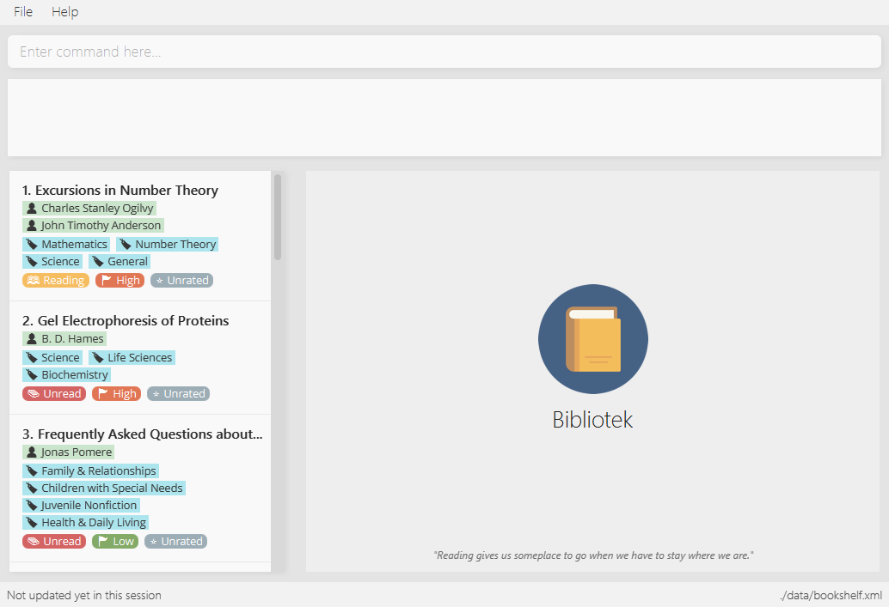
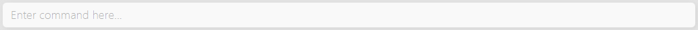
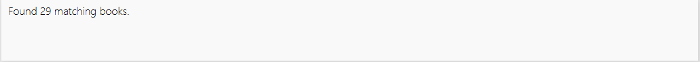
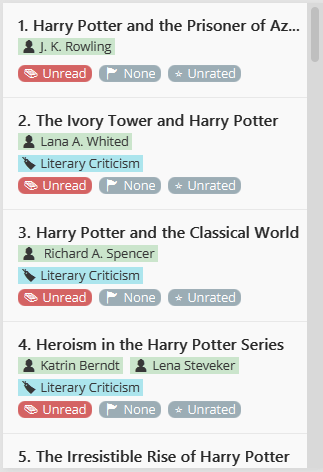

By: Team F14-B4 Since: Jan 2018 Licence: MIT
1. Introduction
1.1. What is Bibliotek
Bibliotek is a free book cataloguing application that is simple, fast and easy to use. You can use Bibliotek to search for books, manage your reading list and track the availability of your books.
If you prefer to use a desktop app, like working with a Command Line Interface (CLI) while still having the benefits of a Graphical User Interface (GUI) or can type fast, Bibliotek is just for you!
Interested? Jump to Section 2, “Installing Bibliotek” to get started. Enjoy!
2. Installing Bibliotek
Follow the steps below to get Bibliotek up and running on your computer.
-
Ensure you have Java version
1.8.0_60or later installed in your Computer.Having any Java 8 version is not enough. This app will not work with earlier versions of Java 8.
If you are unsure how to check the Java version on your computer, do check out this link.
To download the latest Java 8 version, click here. -
Download the latest
bibliotek.jarhere. -
Copy the file to the folder you want to use as the home folder for Bibliotek.
The home folder is where the app and its data will be stored.
We recommend placing Bibliotek in a folder of its own, to prevent any disorganization or clutter caused by data files. -
Double-click on
bibliotek.jarto start the app. The GUI, similar to that shown below, should appear in a few seconds.
3. Navigating Bibliotek
The interface of Bibliotek can be broken down into 4 main components.
-
Just below the menu bar, there is a text box which says
Enter command here…. This is where you type commands that you wish to execute.To get started, try typing
search Harry Potterin this text box and press Enter. -
Below this text box, there is a region which shows text. Responses to your commands can be found here.
If you performed the search, you will realise that this region currently displays some message indicating that your search is in progress, successful or unsuccessful.
-
The left panel displays a list of books, which is the result of your
searchcommand. These books are identified by their position in the list (given beside the book title).Try interacting with the list by clicking on any book.
-
The right panel displays additional information about books which you ask for.
When you click on books, more detailed information is shown in the right panel, such as the book description.
To help you get accustomed to Bibliotek, here are some other commands you can try:
-
list: lists all books -
add 1: adds the 1st book shown in the current list to your book shelf -
delete 3: deletes the 3rd book shown in the current list -
exit: exits the app
Refer to Section 5, “Key Features” for details of each command.
4. Command Format
This section contains information about the general format of our commands and how they are represented in this documentation. If you are new to Bibliotek, do take some time to read this section so that Section 5, “Key Features” will make sense to you.
Command Format
-
Words in
UPPER_CASEare the parameters you supply e.g. insearch t/TITLE,TITLEis a parameter which you can use assearch t/Harry Potter. -
Items in square brackets are optional e.g you can use
[t/TITLE] [a/AUTHOR]ast/Harry Potter a/Rowlingor ast/Harry Potter(but there cannot be no parameters). -
Items with
… after them can be used multiple times, including zero times. For example, you can use[a/AUTHOR]…asa/Dubner,a/Dubner a/Steven Levitt, etc. -
Parameters can be in any order. For example, if the command specifies
a/AUTHOR t/TITLE,t/TITLE a/AUTHORis acceptable.
5. Key Features
This section documents features that are fundamental for using Bibliotek to manage your books.
5.1. Viewing help : help
If you are unsure of some commands, use the help command to open this document.
Format: help
5.2. Searching for books online : search
Want to search for a specific book? Browsing for new books? Use the search command.
Format: search [KEY_WORDS] [i/ISBN] [t/TITLE] [a/AUTHOR] [c/CATEGORY]
You can only perform search with Internet connection.
|
If you want to find any books with Harry Potter as keyword, enter search Harry Potter.
Bibliotek shows Searching for matching books… to indicate that your search is being processed.
This may take some time since an external service is being called to fetch your search results.
When your search results are ready, Bibliotek shows Found xx matching books. and displays your
search results in the left panel.
If Bibliotek shows Failed to retrieve information from online., it means your search request has timed out.
You should try again after some time.
|
Other examples:
-
search Artemis a/Andy Weir
Returns a list of books containing the wordArtemis, whereAndy Weirmatches one of the authors. -
search t/Babylon’s Ashes c/Science Fiction
Returns a list ofScience Fictionbooks that containsBabylon’s Ashesin the title.
5.3. Selecting a book : select
If you are interested in a book and want to view more information about it, use select.
Format: select INDEX
Suppose you have the following search results.
If you are interested in The Ivory Tower and Harry Potter and wish to view more information,
enter select 3.
Bibliotek shows Selected Book: 3 to indicate that your select is successful. The left panel
is auto-scrolled to the selected book and the right panel shows detailed information of the book.

Alternatively, instead of entering select 3, you can directly select The Ivory Tower and Harry Potter
by clicking on it in the left panel.
Bibliotek shows the detailed information of the book in the right panel. Note that no confirmation message will be shown in this case.
Other examples:
-
list
select 2
Selects the 2nd book in your book shelf. -
list p/HIGH
select 1
Selects the 1st book among books withHIGHpriority in your book shelf. -
search Artemis a/Andy Weir
select 1
Selects the 1st book in the search results.
5.4. Adding a book : add
If you find a book you wish to read in your search results, you can add this book into your book shelf. Use the add command.
Format: add INDEX
You cannot perform add when the list shown is your book shelf.You also need Internet connection. |
Suppose you have the following search results.
If you want to add Harry Potter and the Classical World to your book shelf, enter add 2.
Bibliotek shows Adding the book into your book shelf… to indicate that your add is being processed.
This may take some time since an external service is being called to fetch more detailed information about
the book before adding it to your book shelf.
Once the necessary information is fetched and the book is added, Bibliotek shows New book added: TITLE - Authors: AUTHORS.
You can verify that the book have been added by entering list t/TITLE. In this case, you can enter list t/Harry Potter.
Other examples:
-
search t/Babylon’s Ashes c/Science Fiction
add 1
Adds the 1st book in the search results.
5.5. Listing, filtering, and sorting your books : list
If you want to view all the books in your book shelf or just a portion of them, use the list command.
Format: list [t/TITLE] [a/AUTHOR] [c/CATEGORY] [s/STATUS] [p/PRIORITY] [r/RATING] [by/SORT_BY]
If you want to view all books in your book shelf, you can simply enter list.
Bibliotek shows Listed xx books. to indicate that the command was successful.
The left panel will show all the books in your book shelf.
Other examples:
-
list a/Andy Weir by/title
Lists books in your book shelf that containsAndy Weirin one of the authors' name, and sort them in alphabetical order according to their titles. -
list t/Babylon’s Ashes c/Science Fiction
ListsScience Fictionbooks in your book shelf that containsBabylon’s Ashesin the title.
5.6. Editing a book : edit (since v1.4)
After reading a book, you may want to give the book a rating or set the book as read.
Or, you may want to change the priority of books to remind yourself what you should read next. These can be done using edit.
Format: edit INDEX [s/STATUS] [p/PRIORITY] [r/RATING]
You can only perform edit when the list shown is from your book shelf.
|
Examples:
-
edit 1 p/high
Changes the priority of the 1st book toHIGH. -
edit 2 s/read r/5
Marks the 2nd book asREADand changes its rating to5.
5.7. Deleting a book : delete
No longer want a book in your book shelf? Remove it using delete.
Format: delete INDEX
You can only perform delete if the list shown is from your book shelf.
|
| You don’t have to delete books after reading them. Simply mark them as read. They may serve as useful reference in the future. |
Suppose you have the following books in your book shelf.
If you no longer want to read Harry Potter and the Classical World and wish to remove it from your book shelf, enter delete 3.
Bibliotek shows Deleted Book: TITLE - Authors: AUTHORS to indicate that your delete is successful.
The book no longer exist in the left panel.
Other examples:
-
list t/Harry Potter
delete 1
Deletes the 1st book in the results of thelistcommand.
5.8. Clearing book shelf : clear
Don’t need the data in your book shelf anymore? Remove them using clear.
Format: clear
You can only perform clear if the list shown is from your book shelf.
|
If you want to delete all books, enter clear.
Bibliotek shows Book shelf has been cleared! to indicate that your clear is successful.
The left panel is now empty.
5.9. Viewing book reviews : reviews (since v1.3)
If a book catches your eyes but you are not sure whether it’s worth the read, use
reviews to find out what other readers think.
Format: reviews INDEX
You can only perform reviews with Internet connection.
|
Suppose you have the following search results.
If you want to view book reviews for The Ivory Tower and Harry Potter, enter reviews 3.
Bibliotek shows Showing reviews for book: TITLE - Authors: AUTHORS. and displays a browser at the right panel.
The browser will begin loading the reviews page of the book on goodreads.
Once the web page has loaded, you will be able to see the reviews, as shown below.
Other examples:
-
search t/Babylon’s Ashes c/Science Fiction
reviews 1
Shows online reviews of 1st book in the search results.
5.10. Finding a book in the library : library (since v1.5)
If you want to know whether a book is available in the library, use library.
Format: library INDEX
You can only perform library with Internet connection.
|
Suppose you have the following books in your display list.
If you want to search the library for Harry Potter and the Classical World, enter library 3.
Bibliotek shows Searching for the book in the library… to indicate that your library command is being processed.
This may take some time since data is being loaded from the online library catalogue.

Once the data is ready, Bibliotek shows Showing availability of book: TITLE - Authors: AUTHORS.
You will be able to see the availability of the book in the library in the right panel shortly after, as shown below.
| You can only interact with (e.g. scroll) the right panel when loading is fully completed. |
| In the event that loading isn’t completed after a long time, you should try the command again. |
If Bibliotek shows Failed to retrieve information from online.,
it means your search request has timed out. You should try again after some time.
|
6. Convenience Features
This section documents features that will provide you greater ease and convenience when using Bibliotek.
6.1. Listing recently viewed books : recent (since v1.2)
You recently selected a book in one of your searches but did not add it into your
book shelf, and now you have trouble searching up that book again? No worries, recent
is designed to take care of this.
Format: recent
|
You can select books in the |
Suppose you recently selected The Ivory Tower and Harry Potter in your search results.
You did not add the book into your book shelf. After performing various other selections,
you regret not adding The Ivory Tower and Harry Potter into your book shelf. Instead of
performing the search again, you can enter recent to view recently selected books.
Bibliotek shows Listed all recently selected books. to indicate that your recent command
is successful. You can scroll down the left panel to locate The Ivory Tower and Harry Potter
(index 4 in this case).

You can then enter add 4 to add the book into your book shelf.
| If you don’t see the intended book in the list, then too many book selections have been performed after that book. |
6.2. Undoing previous command : undo
If you regret executing a command, use undo to reverse your action.
Format: undo
|
Undoable commands: those commands that modify the book shelf’s content ( |
Suppose you just deleted a book Harry Potter and the Classical World.
If you regret your deletion and wish to undo it, enter undo.
Bibliotek shows Successfully undone deleting of TITLE - Authors: AUTHORS.
to indicate that your undo of the deletion is successful. Harry Potter and the Classical World is back in your book shelf as seen in the left panel.
Your entire book shelf is shown in the left panel after performing undo.
|
Other examples:
-
select 1
list
undo
Theundocommand fails as there are no undoable commands executed previously. -
delete 1
clear
undo(reverses theclearcommand)
undo(reverses thedelete 1command)
6.3. Listing entered commands : history
If you want to view the commands that you have entered previously, use history.
Format: history
|
Pressing the ↑ and ↓ arrows will display the previous and next input respectively in the command box. |
6.4. Adding a command alias : addalias (since v1.5)
If there is a command that you use frequently, and you find typing out the entire command to be too tedious,
you can add a command alias to reduce the amount of typing needed.
Format: addalias ALIAS_NAME cmd/COMMAND
If COMMAND does not specify a valid built-in command, you will
get an Unknown command message when you attempt to use the command alias.
|
You can use command aliases to specify default named parameters (parameters with a prefix, such as t/TITLE).For example, if you want a custom list command that sorts by rating by default,
you can add a command alias using addalias ls cmd/list by/rating.You can override this default sort mode by specifying a different sort mode, e.g. ls by/status.
|
Examples:
-
addalias rm cmd/delete
Adds a command alias with the namerm.
You can then userm INDEXin place ofdelete INDEX. -
addalias read cmd/edit s/read p/none
Adds a command alias with the nameread.
You can then useread INDEXin place ofedit INDEX s/read p/none.
6.5. Listing command aliases : aliases (since v1.5)
If you have forgotten some of your command aliases and need a quick refresher, you can use
the aliases command to view them.
Format: aliases
After entering the aliases command, Bibliotek shows Listed xx aliases. to indicate that the command was successful.
The right panel will display a list of all your command aliases.
7. Other Features
This section documents some additional features in Bibliotek that do not fall into the above categories.
7.1. Displaying quote of the day
When the right panel is empty (e.g. on start up), Bibliotek displays a default panel containing a random quote of the day about books.
7.2. Changing theme : theme (since v1.2)
If you don’t like the default theme used by Bibliotek, you can change it using theme.
Format: theme THEME_NAME
You can change the application to the white theme using theme white.
Bibliotek shows Application theme changed to: white to indicate that your theme change is successful.
The same goes for theme light:
And theme dark:
8. Upcoming Features
This section documents features which will be worked on in the future.
8.1. Placing a book on watchlist : watch (coming in v2.0)
Interested in so many books that searching them up using library is time consuming?
With watch, you can automatically get notified when a book in your watchlist
becomes available at the library, saving you the trouble of having to check yourself!
Format: watch INDEX
|
Bibliotek informs you of the availability of your watchlisted books in the library every time you start up the application. |
8.2. Ordering a book online : order (coming in v2.0)
If you wish to purchase a book, use order.
Format: order INDEX
You can only perform order with Internet connection.
|
Examples:
-
list
order 1
Opens the purchase page of the 1st book in your book shelf in your chosen site.
8.3. Getting book recommendations : suggest (coming in v2.0)
Having problems deciding what to read next? Bibliotek can give you book recommendations
based on the books in your book shelf. Use suggest to obtain your personalized recommendations!
Format: suggest
| Give appropriate ratings to books you have read to obtain recommendations that are closer to your preferences. |
8.4. Importing books from other E-Readers : import (coming in v2.0)
If you are using other E-Readers and have many books in your collection that you wish to
add into your Bibliotek book shelf, import is the command you are looking for.
Format: import SOURCE
8.5. Changing font size : fontsize (coming in v2.0)
Think the font size is too small or large for your liking? You can customize the
font size to your own needs.
Format: fontsize FONT_SIZE
8.6. Autocompleting commands : Tab (coming in v2.0)
Do want to type faster? Fret not! Just press 'Tab' and Bibliotek will automatically
complete your commands for you.
8.7. Changing/Setting a password : setpw (coming in v1.5)
If you want to keep your data secure, you can opt to set a password for Bibliotek. This password will be used to encrypt your data.
After starting up Bibliotek, you will have to unlock it using your password before being able to perform any commands.
Format: setpw old/OLDPW new/NEWPW
To set a password, use setpw new/NEWPW.Similarly, to delete the password, use setpw old/OLDPW.
|
| You should remember your password after setting a new one. |
8.8. Lock the app : lock (coming in v1.5)
If you are going away for a moment and want to prevent others from messing with the application, you can perform lock.
Format: lock
If you perform lock without a password, anyone can unlock your application.
|
8.9. Unlock the app : unlock (coming in v1.5)
If you previously performed lock, use unlock to unlock the app.
Format: unlock PASSWORD
If you did not set a password, simply type unlock to unlock the app.
|
| If you really forgot your password and cannot unlock the system, you can reset Bibliotek by deleting all your data files. |
8.10. Changing settings: settings (coming in v2.0)
8.10.1. Library (coming in v2.0)
If you want to search for books in other libraries, you can change your settings.
Format: settings lib/LIBRARY
|
Only some libraries are supported. Do contact us if there are other libraries you wish are supported. |
8.10.2. Online shopping site (coming in v2.0)
If you want to purchase books on other online booksellers, you can change your settings.
Format: settings order/SITE
|
Only some sites are supported. Do contact us if there are other sites you wish are supported. |
9. FAQ
Q: How do I transfer my data to another Computer?
A: Install the app in the other computer and overwrite the empty data file it creates with the file that contains the data of your previous Bibliotek folder.
Q: Why do my commands keep timing out?
A: The external service may be down at the moment. You should try again after some time.
Q: I have a problem and this guide did not help.
A: Post in our issues page and we will try our best to answer your queries.
Q: Can I build upon Bibliotek?
A: Yes, you are free to build upon Bibliotek. The source code for Bibliotek is available on our GitHub page.
10. Command Summary
If all you need is a quick reference on how to use certain commands, you can refer to the table below.
| Action | Command syntax |
|---|---|
Add book to book shelf |
e.g. |
Add a new alias |
e.g. |
List existing aliases |
|
Clear book shelf |
|
Delete book from book shelf |
|
Delete an existing alias |
|
Edit book in book shelf |
e.g. |
Close the app |
|
View help |
|
View previous commands |
|
Search for book in library |
|
List books in book shelf |
e.g. |
Lock the app |
|
View recently selected books |
|
View book reviews |
|
Search for books |
e.g. |
Set password |
e.g. |
Select a book |
|
Change theme |
|
Undo previous change |
|
Unlock the app |
|
Appendix A: Glossary
- Command Line Interface (CLI)
-
A user interface in which the user interacts with the system by typing in commands.
- Graphical User Interface (GUI)
-
A program interface that make use of visual elements to allow the user to interact with the system.
- International Standard Book Number (ISBN)
-
A unique identifier given to every edition of a book published.
The 13-digit ISBN, which is used by Bibliotek to identify books, has been in use since January 2007.